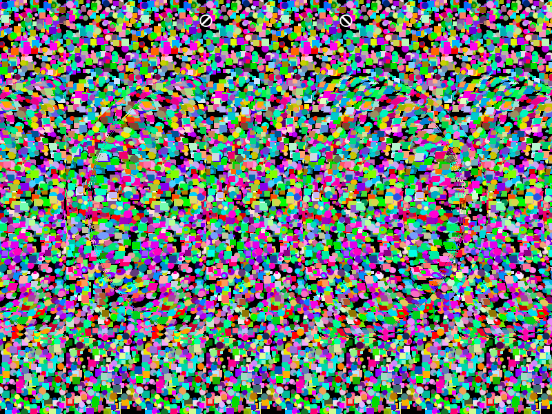
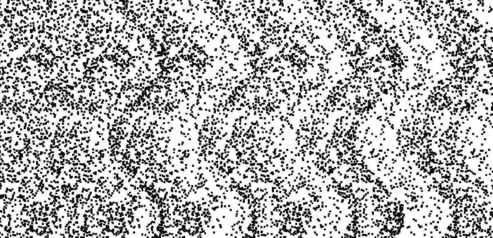

ランダムドットステレオグラムとは？目のピントと立体視をやさしく使う視覚トレーニング

スマホやPCを長く見たあとに、遠くへ視線を移した瞬間だけぼやける。そんな経験がある方は少なくありません。近くを見る作業が続くと、目のピント合わせと両目の寄り目を担う仕組みに負担がかかりやすくなります。
そこで注目されているのが、ランダムドットステレオグラムです。単なる模様のように見える画像の中に奥行き情報を埋め込み、左右の目と脳で立体を組み立てて見る視覚コンテンツです。視力を治療するものではありませんが、近くを見続けがちな毎日の中で、目の使い方を切り替えるきっかけとして取り入れやすいのが魅力です。
ランダムドットステレオグラムとは？
ランダムドットステレオグラムは、黒や白の細かな点で構成された画像に、左右の目にわずかに異なる位置情報を与えて奥行きを感じさせる技術です。ぱっと見ではただのノイズ画像に見えますが、うまく見ると隠れた形や文字が立体的に浮かび上がります。

特徴はこの3つです
- 片目だけでは形がわかりにくく、両目の協調が必要
- 左右の視差を脳が統合して、はじめて奥行きとして知覚される
- 単純な絵合わせではなく、立体視そのものの働きを使う
古典的なレビューでも、単一画像のランダムドットステレオグラムは「眼鏡なしでも立体視を体験できる方法」として説明されています。見えにくい場合は、画像面より少し奥に視線を逃がす感覚をつかむことがポイントです。
毛様体筋を緩めるきっかけになる
近距離を見続けると、ピント調節を担う毛様体筋は収縮した状態が続きやすくなります。実際に、長時間の近業は調節緊張やピントの切り替えづらさにつながることが知られています。
ランダムドットステレオグラムでは、画像そのものは手元にあっても、見方によっては「画面の奥」に焦点を逃がす感覚を使います。この切り替えによって、近くを見続けて収縮しがちな状態からいったん離れ、毛様体筋を緩める練習のきっかけになります。
ここは大事です。 ランダムドットステレオグラムは、近視や乱視を治療する医療行為ではありません。ただ、近見作業の合間にピントを切り替える習慣としては取り入れやすく、眼精疲労のセルフケアとして相性が良いコンテンツです。
視覚関連の脳の活性化につながる
ランダムドットステレオグラムの面白さは、目だけで完結しない点にあります。左右の目に入った微妙なズレを、脳の視覚系が「これは奥か、手前か」と解析してはじめて立体として感じられます。
研究では、ランダムドットステレオグラムの視差処理に一次視覚野（V1）や、立体視に関わる背側視覚経路の領域が関与することが示されています。つまり、ただ模様を見るのではなく、視覚関連の脳を使って奥行きを再構成する課題になっているということです。
脳にとっての負荷は「ちょうど良い知覚課題」
- 左右の画像差を見分ける
- 両目の情報を1つにまとめる
- 平面の画面から立体の形を推定する
このため、ランダムドットステレオグラムは「目の筋肉だけを鍛える」よりも、目と脳の連携を使う視覚トレーニングとして紹介しやすい題材です。
続けやすい見方のコツ
無理なく見るためのポイント
- 最初は10〜20秒だけ試し、見えなくても力まない
- まばたきを止めず、画面をにらみ続けない
- 見えたら終わりではなく、奥行きを数秒保ってみる
- 疲れを感じたらすぐ休み、遠くを見る時間を入れる
頭痛、強い目の痛み、気分不良、物が二重に見える感じが続く場合は中止してください。斜視、複視、強い眼精疲労、既往の眼疾患がある方は、無理せず眼科や視能訓練士に相談するのが安全です。
視力回復コンテンツとして取り入れるなら
視力回復をテーマにしたコンテンツでは、どうしても「すぐ見えるようになる」という強い表現が目立ちがちです。しかし実際には、毎日のセルフケアで大切なのは、近くばかりを見続ける状態をほどき、ピント調節と立体視の働きをバランスよく使うことです。
ランダムドットステレオグラムは、その入り口として非常に扱いやすい素材です。シンプルなのに奥行き知覚を必要とし、目の使い方を切り替えやすく、短時間でも取り組みやすい。だからこそ、視力回復に関連する読み物やアプリの導入コンテンツとして相性が良いといえます。
最後におすすめのアプリ紹介
ランダムドットステレオグラムを「たまに見る画像」ではなく、日々続けるトレーニングとして使いたいなら、『視力回復3Dトレーニング』がおすすめです。
このアプリでは、ランダムドットステレオグラムをベースにした3Dトレーニングをスマホで手軽に続けられます。短時間で取り組みやすく、毎日のすきま時間にピント切り替えと立体視の練習を入れたい方に向いています。まずは無理のない時間から始めて、見え方のコツを少しずつつかんでいく使い方が自然です。
毎日の立体視トレーニングを、アプリでもっと手軽に
ランダムドットステレオグラムを継続して楽しみたい方には、『視力回復3Dトレーニング』がぴったりです。
片手で使えて、短時間でも取り組みやすいので、通勤前や休憩中にも続けやすくなっています。
参考文献
- Lee DY, Ireland D. Single image random dot stereogram: principles and clinical implications. J Am Optom Assoc. 1996.
- Henriksen S, Tanabe S, Cumming B. Disparity processing in primary visual cortex. Phil Trans R Soc B. 2016.
- Wang F, et al. Brain activation difference evoked by different binocular disparities of stereograms: An fMRI study. Phys Med. 2016.
- Kaur K, et al. Digital Eye Strain - A Comprehensive Review. Ophthalmol Ther. 2022.
- Hilora M, Tripathy K. Accommodative Excess. StatPearls. Updated February 5, 2025.